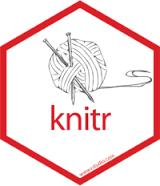

1.2 Markdown
Markdown no es un programa de edición de texto, es simplemente un lenguaje, una forma de escribir que puede ser utilizada en distintos editores de texto. Con esta forma de escribir, luego otro programa identifica las marcas de texto y las transforma en un documento con formato. Este programa que convierte documentos Markdown en otros documentos es pandoc, un convertidor entre distintos formatos. Pandoc es el programa que hará todo el trabajo en las sombras, no lo veremos ni tampoco es estrictamente necesario conocer su funcionamiento directo, pero en realidad este es el programa que permite escritura simple sin renunciar a documentos con un formato de calidad presentable. Por ejemplo, un título en Markdown se señala con la marca #, por ejemplo, # Introducción, y Pandoc identifica esta marca y convierte esta línea en título en el documento de salida que se le solicite. Por cierto, Pandoc es gratuito y de código abierto.
Para poder utilizarlo sirve cualquier editor de texto, incluso algo como el block de notas. Sin embargo, para facilitar la escritura se utilizan editores que tengan soporte especializado para Markdown, para poder reconocer de mejor manera las marcas en el mismo editor. Existen muchos editores disponibles, siendo los más populares Emacs, Sublime, Atom, VSC. También RStudio puede calificarse como un editor, aún cuando está especializado en un programa específico (R). Lo utilizaremos principalmente por las opciones que tiene para una variedad específica de Markdown denominada RMarkdown (ver sección siguiente), y que permite combinar texto y análisis en un mismo documento, favoreciendo la reproducibilidad.
1.2.1 Marcas de edición en Markdown
Títulos
Los títulos se generan mediante el carácter # , de la siguiente manera:
# Titulo 1
## Título 2
### Título 3Lo que al convertirse (por ejemplo, a HTML) genera lo siguiente:
Titulo 1
Titulo 2
Titulo 3
Negritas / cursivas
esto es **negrita**
esto es *cursiva*esto es negrita esto es cursiva
Listas
```
- item 1
- item 2
- item sub 2
- item sub 2 sub 2
1. item
2. item
- item
- item
```- item 1
- item 2
- item sub 2
- item sub 2 sub 2
- item sub 2
- item
- item
- item
- item
Web links
Facso http://www.facso.uchile.cl/
[Facso](http://www.facso.uchile.cl/)
[http://www.facso.uchile.cl/](http://www.facso.uchile.cl/)Imágenes
En general:
Ejemplo:

Esta imagen se encuentra en el subdirectorio images.
Si se desea agregar otros elementos de edición como centrado o tamaño, hay que recurrir a otro tipo de marcas, como html:
<p align="center">
<img src="images/knitr.png" width="240px" height="280px"/>
</p>
Como se puede ver, markdown está hecho para edición simple, y cualquier aspecto que requiera una mayor edición implica recurrir a otros lenguajes, en este caso html.
Tablas
Markdown no es un lenguaje óptimo para generar tablas. Justamente se trata de que las tablas sean generadas automáticamente por los programas de análisis de datos. Sin embargo en ocasiones es necesario realizar tablas con contenidos de texto, por ejemplo
Esta |es | la tabla
- |- |-
y | este | el
contenido | de las | celdas| Esta | es | la tabla |
|---|---|---|
| y | este | el |
| contenido | de las | celdas |
1.2.2 Opciones adicionales de formato en Markdown
Las marcas de formato en Markdown son muy limitadas, es parte de su sentido original. Sin embargo, si se quiere agregar otras opciones de formato (titulo del documento, márgenes, interlineado, formato de las tablas, etc.) esto se hace por separado en la sección inicial o preámbulo del documento, que en el caso de Markdown se llama “encabezado YAML” (Yet Another Markdown Language). Esta sección se identifica porque aparece al principio del documento con tres guiones al comienzo y al final. Revisaremos esto con mayor detalle más adelante en la sección de documentos dinámicos:
1.2.3 Sobre los archivos Markdown
Los archivos Markdown por lo general tienen extension .md. Ahora, estos archivos pueden ser abiertos con cualquier editor simple disponible en el computador, no se asocian a un programa específico. Para poder luego generar (render) un documento formateado a partir del Markdown, los editores de texto tienen rutinas asociadas que lo facilitan, muchas veces solo con un click.
1.2.4 Usando RStudio como editor de Markdown
RStudio se ha especializado progresivamente en una versión de Markdown, que es RMarkdown, pero antes de profundizar en esta versión veremos algunos ejemplos en Markdown tradicional. Algunas características del trabajo con Markdown:
Para crear un archivo Markdown en RStudio simplemente crear archivo de código (File -> New File -> R Script, o simplemente Ctrl + Shift + N); luego al momento de guardar dar extensión .md (ejemplo: prueba.md)
Con esto se puede comenzar a escribir en la hoja de código y probar las marcas de Markdown de la sección anterior.
Para poder visualizar de mejor manera las marcas de edición en el editor algunas opciones de visualización en RStudio (editor themes) son mejor que otras; en general las más recomendables son las de los temas “Tomorrow”, pero depende del gusto personal. Esto se puede ajustar en Tools -> Global Options -> Appearance -> Editor Theme.
Figure 1.3: Ejemplo documento Markdown en RStudio
En la 1.3 se muestra una sesión de RStudio, con el documento Markdown a la izquierda, y su conversión a HTML a la derecha. Para poder generar el HTML (o pdf) en RStudio se utiliza la librería Knitr, que se detalla en la sección siguiente.